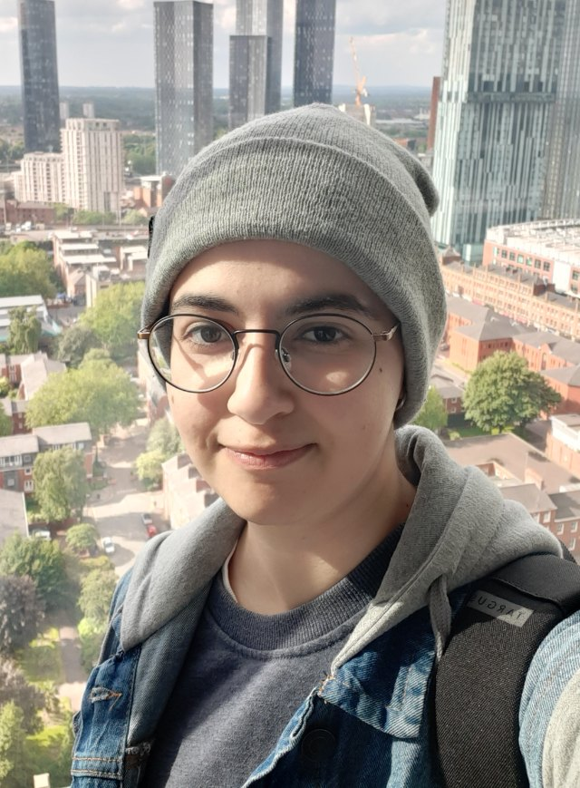

A network of companies · Environmental signals · Sustainable Finance
Hi! I'm Nermine — a PhD candidate in Accounting and Finance at Lancaster University Management School, UK. I use state-of-the-art AI to study sustainable finance, corporate disclosure, and firms' environmental performance, and I'm an Affiliated Researcher at the Pentland Centre for Sustainability in Business. In early 2026 I was a visiting researcher at Frankfurt School of Finance and Management, hosted by Prof Van Lent. I'm currently on the academic job market.

I'll present my work at the 7th Emerging Scholars in Accounting Conference at Frankfurt School of Finance and Management, Germany.
Sep–Oct 2026
I'll present my work on sustainability disclosure and firm valuation at the AFAANZ Annual Conference in Melbourne, Australia.
July 2026
Visiting researcher at Frankfurt School of Finance and Management, hosted by Prof Van Lent (Jan–Apr 2026).
Jan 2026
Builds a pairwise measure of firm physical-environment similarity from satellite-derived embeddings of corporate facilities for 2,482 U.S. public firms.
Working Paper
Distinguishes "more good" from "less harm" environmental strategies using LLMs on U.S. corporate sustainability reports, and shows they carry distinct financial payoffs.
Working Paper